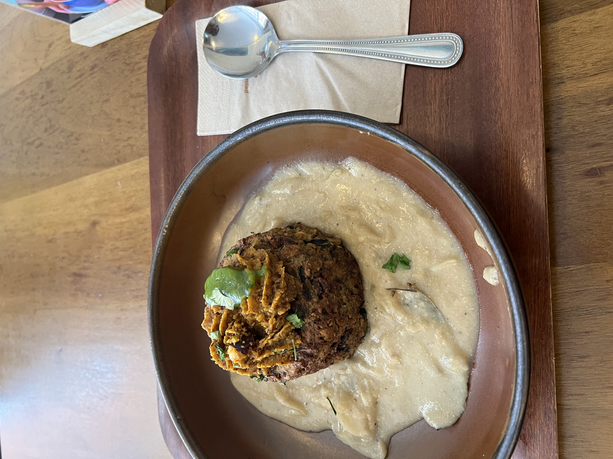
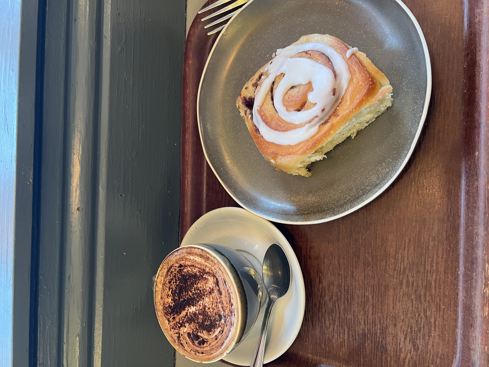
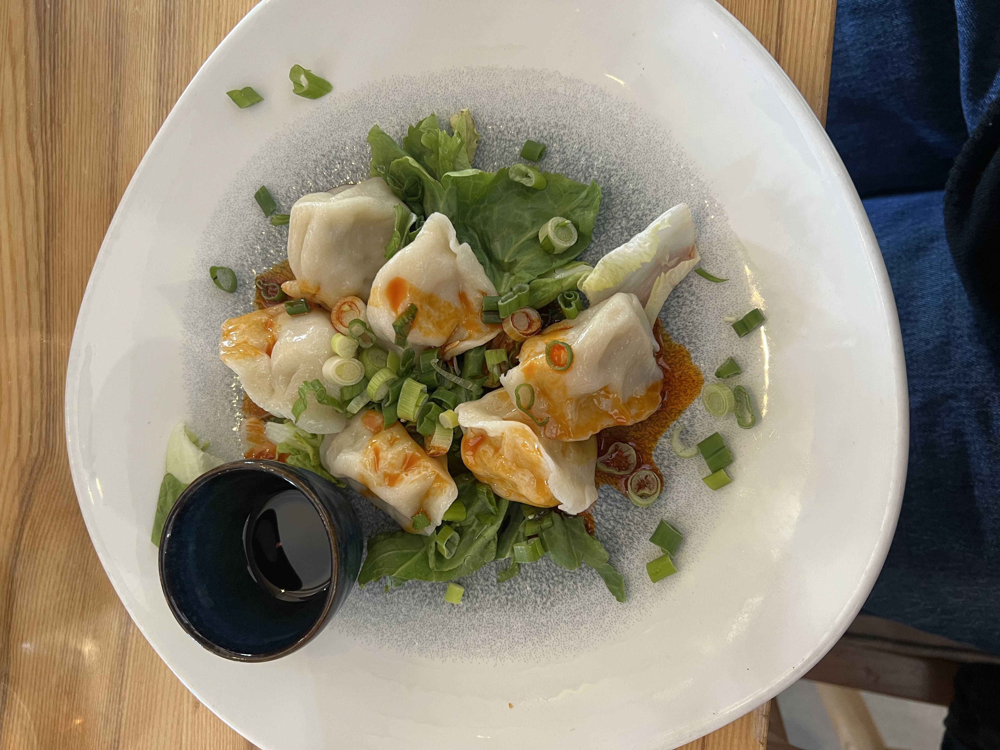
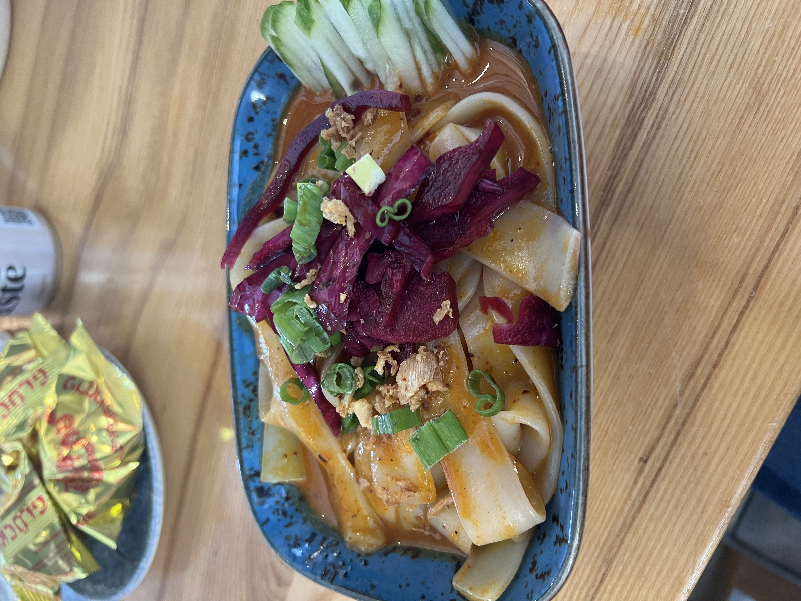
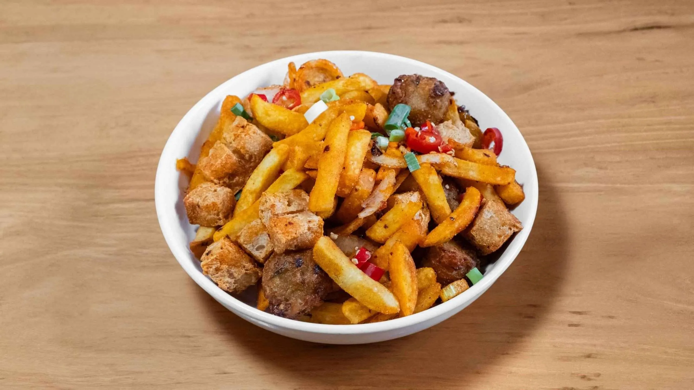
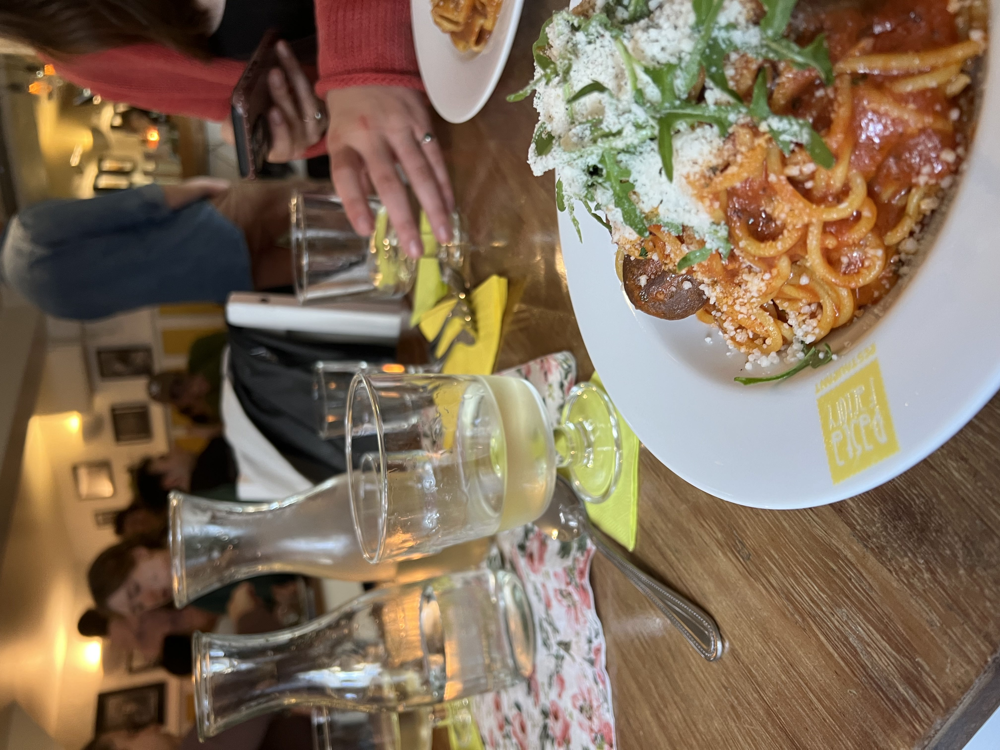
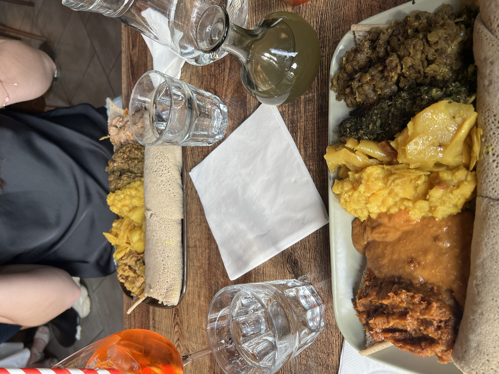
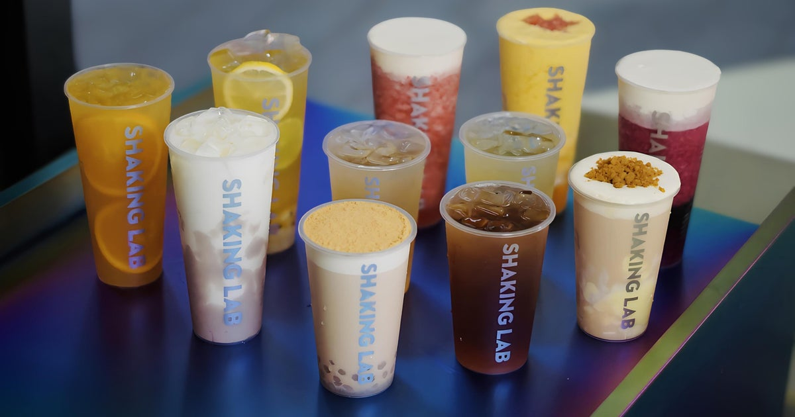
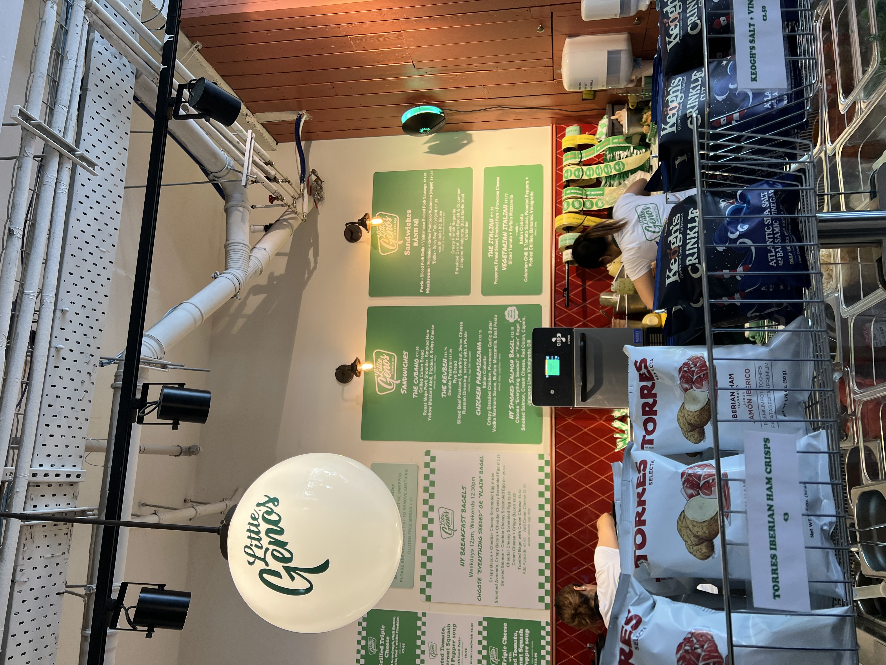
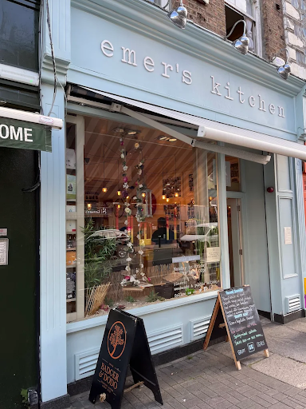

Food and Drink Recs
Food Recommendations
I wasn't too worried about finding vegan options when I came to Dublin since my experience in the U.K. was quite good, and I was right to. Dublin is home to so many amazing vegan spots, and you can find a plant-based menu option at most restaurants. One of my top restaurants was Cornucopia. Their dinners are fully vegan with a rotating menu. They also have a deal for one entree and a glass of beer/wine for €17. Not exactly the cheapest meal, but I'd say its pretty average for Dublin. Out of all cuisines, it seems to be the hardest to find vegan Irish food, so I took the opportunity and ordered their boxty cake. I know it doesn't look very appetizing, but it was delicious. It tasted sort of like a hashbrown but more flavorful. The cream sauce it came with was also quite good. My only complaint was that a very large group of people had to pay at the register before me, so by the time I got my food, it had gone a bit cold.
I also came back a week or so later and got just a cappuccino and vegan cinnamon roll, which were also very good! They also have bar seating at the window, so I could people watch while I had my coffee.


Another delicious meal I had was at Re Nao, a Chinese restaurant in Galway. Their tofu dumplings are a bit of a miss, but their liangpi salad was delicious. It was savory and peanuty with a bit of acid from the black vinegar and pickled veggies.


I also went to Re Nao's sister restaurant, Xi'An Street Food, to try their veggie spice bag. Spice bags are an Irish Chinese dish that normally has salt and chili spiced fries, peppers, onions, and shredded chicken. I really liked the salt and chiili seasoning, but the peppers and onions were a bit too salty. My spice bag also came with fried tofu and potato balls (I think?) that were also really good. Be sure to eat it all at once though because they don't keep well.

Finally, we ended off the day with dinner at the Pasta Factory. This was by far my favorite restaurant in Galway. They had lots of vegan options (more than the non-vegan options). I ordered spaghetti with marinara and "meat"balls and "parmesan," and it was delicious. The interior was also very cute!

My favorite meal of the trip was at Gursha, and Ethiopian restaurant. Ethiopian food is my favorite, and I knew I had to try it if I could find it in Dublin. I got a veggie platter, which came with 6 dishes. Anna also came along with me, and she got 5 dishes on her meat and veggie platter. The food was very flavorful, and they had good injera. The portions are also very good—Anna couldn't even finish hers. I also tried Ethiopian honey wine for the first time. It's a bit sweet for my taste, but Anna says their Aperol spritz is very good. If you were to only visit one restaurant on this list, I highly recommend Gursha.

Drink Recommendations
Disclaimer: I'm terrible at remembering to take photos of my drinks, so most of these recommendations won't have photos taken by me.
Shaking Lab is the type of boba shop you can go to with your friends that don't like boba pearls. They have so many other topping options, like coconut jelly, sago, and pudding. They also have lots of unique flavors that don't even need extra toppings, and they sell fresh, hot milk teas. I got the passion fruit boom, which came with passionfruit seeds and coconut jelly. Next time, I would get it a bit less sweet, but it was really refreshing, especially for how hot outside it was that day.

You'd be right to be suspicious of coffee from a sandwich shop, but Little Geno's does a great iced latte. I only bought a coffee to justify eating the lunch I made at home inside, but I almost thought about returning and getting another one the other day. Next time I visit, I'll definitely have to try their sandwiches too.

If you're looking for good coffee at a good price, you should go to Emer's Kitchen. They have a student discount, and they don't charge for syrups. I was able to get an oat milk iced latte for around €4
